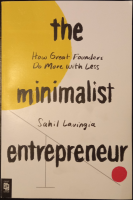

Diseñando la propuesta de valor
101 ways tu improve your Business English
Aprende a dibujar con el lado derecho del cerebro
El milagro metabólico
NO DISPONIBLE
Más agudo, más rápido y mejor
Rompe la barrera del no
El dilema de los innovadores
Cómo ganar amigos e influir sobre las personas
Focus. El motor oculto de la excelencia
Pensar rápido, pensar despacio

Organízate con eficacia (Getting Things Done)
NO DISPONIBLE
Nutrición (de)mente
El método Lean Startup
Las diez claves de la realidad
Sprint. How to solve big problems and test new ideas in just five days

Hábitos atómicos
La máquina que cambió el mundo
El código de la diabetes
El código de la obesidad
NO DISPONIBLE
El ayuno como estilo de vida
Scrum. El arte de hacer el doble de trabajo en la mitad del tiempo
NO DISPONIBLE
La revolución de la glucosa
Girando la rueda
Good to great
Sin límites

12 reglas para vivir. Un antídoto al caos
Python Deep Learning
Nobelnomics
Desayuno de campeones
Matadero cinco. La cruzada de los niños
Experiencia de usuario para lean startups
La vía rápida del millonario

América latina en bicicleta
Hablar con los demás
Fluir (Flow)
Fluir en los negocios
Cómo piensan los ricos
El nombre del viento
El temor de un hombre sabio
Manual de fórmulas de ingeniería
La granada. Reina de las frutas medicinales
Equipos Extremos
Antes de renunciar a tu empleo
NO DISPONIBLE
Padre rico, padre pobre

La Gansada
El club de las 5 de la mañana
Manifiesto para los héroes de cada día
El principio de Oz
La llamada del coraje
The minimalist entrepeneur
NO DISPONIBLE
Una serie de eventos afortunados
Empieza por el porqué
Robar el fuego
Diseñar el cambio
¿Qué es (y qué no es) la estadística?